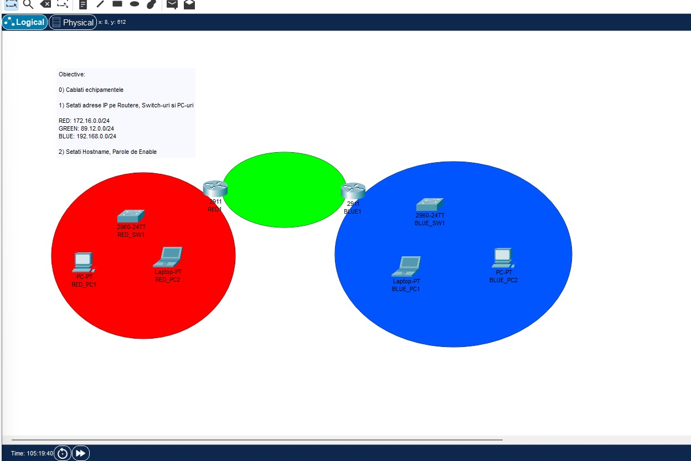
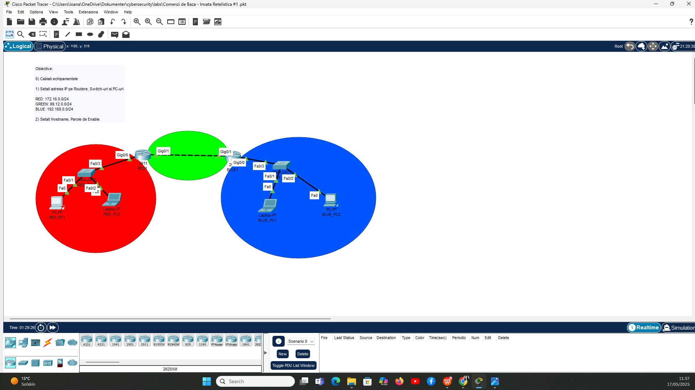
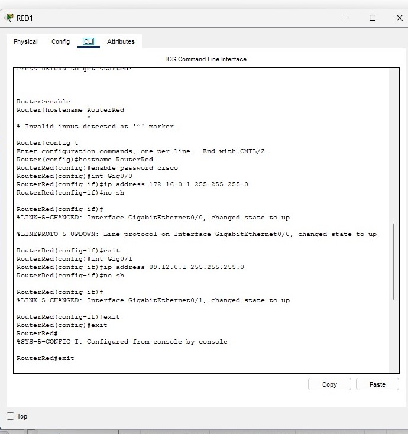
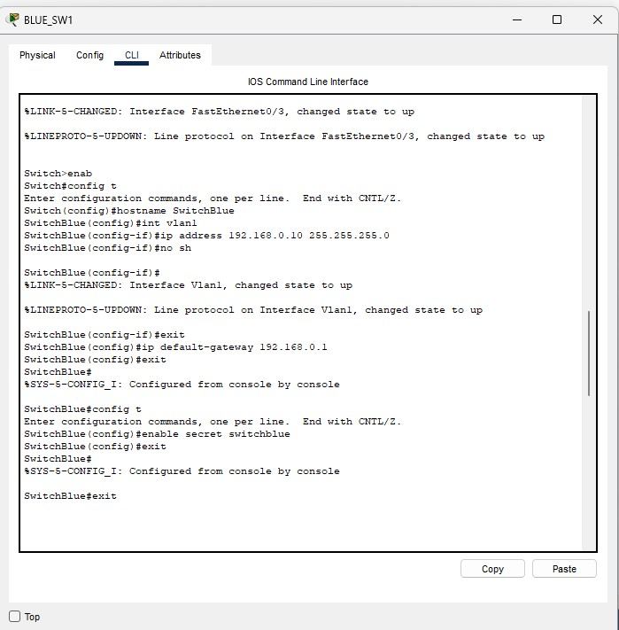
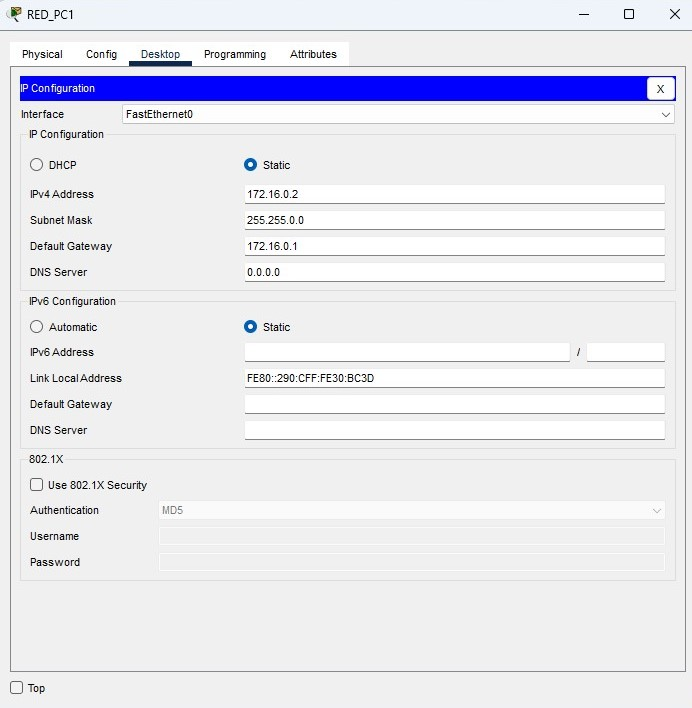
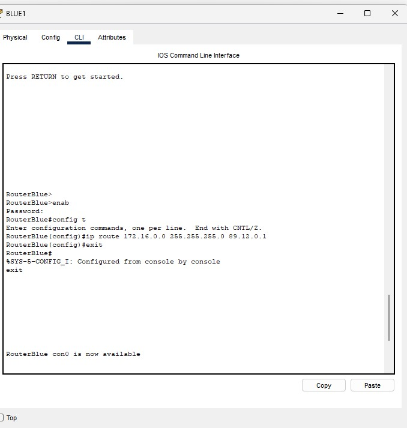
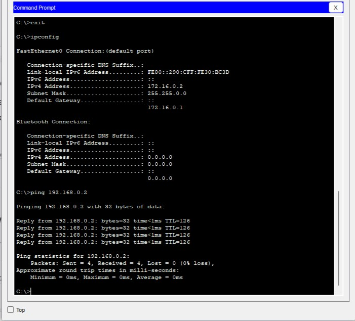
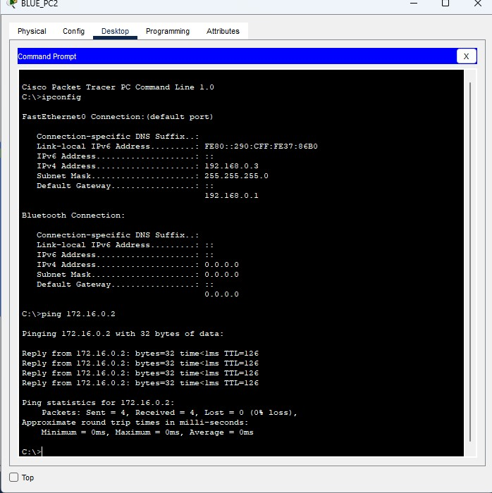
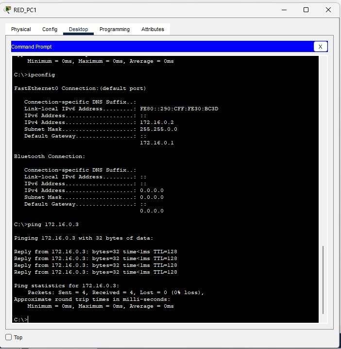
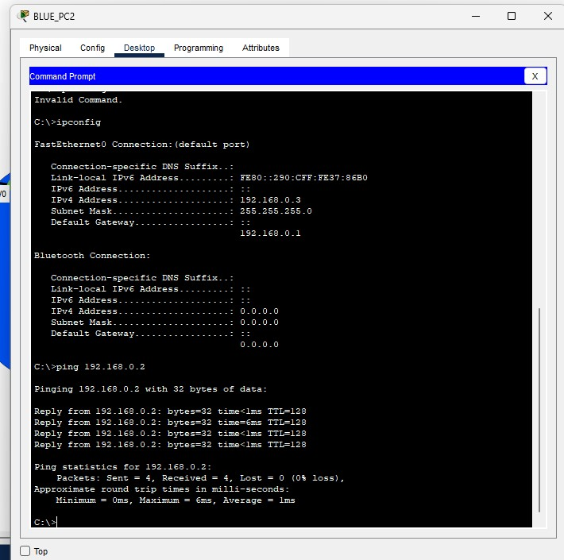

Lab 1 - Basic commads in Cisco Packet Tracer
| Networking | |
| Laboratory 1 introduces students to Cisco Packet Tracer and the basic CLI steps used to set up routers and switches. The lab focuses on understanding the workspace and performing simple device configuration. Objectives • Learn the Packet Tracer interface: add devices, place them on the workspace, and connect them with cables. • Open the CLI and move between User mode and Privileged mode. • Practice key commands: enable, configure terminal, hostname, banner motd, exit, end. • Do basic setup: set a hostname, add simple passwords, save the configuration, and test connectivity with ping. Skills Gained • Navigating Packet Tracer • Using essential CLI commands • Understanding device modes • Applying minimal initial configuration and security Audience Beginners and students who want a simple introduction to configuring Cisco devices in a simulation environment. |
Objective
In this lab I practiced configuring a basic network typology and ensuring communication between networks segments.
Goals:
- Connect the devices ( cabling).
- Assign IP addresses to PCs, switches, and router interfaces.
- Configure hostname and enable password for each device.
Network Topology Overview
- RED Network (192.168.0.0/24)
- GREEN Network (192.168.2.0/24)
- BLUE Network (192.168.6.0/24)
ခ The network is divided into three broadcast domains, connected through routers.


Step-by-Step Configuration
Step 1: Cabling
All PCs, laptops, switches, and routers are connected using appropriate cables.


Step 2: Device IP Configuration and Router Setup
In Step 2 of the lab, I performed network setup by configuring the routers, pcs and switches
Router Configuration:
- Assigned a hostname for device identification.
- Configured user and passwords to secure access.
- Set an IP address on the appropriate interface to establish connectivity.
Switch Configuration:
- Assigned a hostname for identification.
- Secured access by configuring console and enable passwords.
- Configured the VLAN with an IP address if remote access was required.
PC Configuration:
- Assigned static IP addresses to each PC to enable communication within the network.


Router Configuration


Switch Configuration


PC IP address configuration
Step 3: IP Route Configuration
Static routing was configured on both routers to enable full connectivity
between all networks. Screenshot bellow demonstrates the routing configuration on one of the routers.


Routing Configuration
Step 4: Testing Connectivity
To verify the configuration, I conducted connectivity testing between two PCs within the same LAN and from different LANS. Using the ping command, I confirmed that both devices were correctly assigned IP addresses and could communicate with each other over the network.
- The test showed successful replies, indicating proper IP addressing, functional cabling, and correct switch operation.
- This step ensured that the basic network connectivity was established and the LAN segment was working as intended.


Ping connectivity from LAN 172.16.0.0 to LAN 192.168.0.0


Ping connectivity from LAN 192.168.0.0 to LAN 172.16.0.0


Ping connectivity within the same LAN 172.16.0.0


Ping connectivity within the same LAN 192.168.0.0
This lab successfully demonstrates basic router configuration, static routing and end-to-end communication between multiple subnets. All devices are reachable across networks, and configuration is saved for further testing.
To review or simulate the network, download the attached .pkt file and open it using Cisco Packet Tracer software.